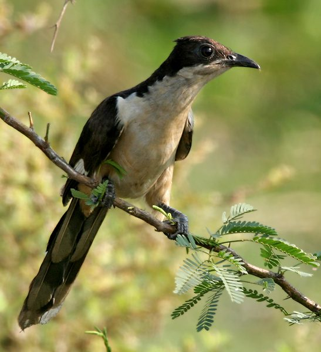

चातकPied Cuckoo
Clamator jacobinus · Cuculidae · BRD-0093

- Scientific name वैज्ञानिक नाम
- Clamator jacobinus (Boddaert, 1783)
- Family कुल
- Cuculidae
- Hindi हिंदी
- चातक / पपीहा
- Local names स्थानीय नाम
- chatak, chaatak, papiha, papeeha, pied cuckoo
- Status here यहाँ की स्थिति
- native
- Movement आवागमन
- Summer visitor
- IUCN IUCN
- LC
- Review समीक्षा
- audited and independently read
When to look कब देखें
Summer visitor ग्रीष्मकालीन प्रवासी. Expected mainly in June, July, August, September, October. मुख्यतः जून, जुलाई, अगस्त, सितंबर, अक्टूबर में अपेक्षित।
Arrives in India with the monsoon (June-July); departs before winter (October-November). Breeds in northern India and migrates south or to peninsular India. All migrants and visitors →
Uses and possibilities उपयोग और संभावनाएँ
Drawn from the documented uses in the profile below, where each is labelled traditional, current or a research lead. All uses →
Tell it apart from इनसे अलग पहचानें
चातक / Pied Cuckoo
Clamator jacobinus (Boddaert, 1783) — Cuculidae
चातक — मानसून की आवाज़, भारत की सबसे प्रसिद्ध साहित्यिक चिड़िया। जब बादल आते हैं और बारिश होने को है, तब चातक "पीऊ-पीऊ" की आवाज़ निकालता है — जैसे वह रोता है। हिंदी कविता में चातक प्रेम और विरह (जुदाई) का प्रतीक है। कवियों ने हजारों साल पहले लिखा है कि चातक सिर्फ बादलों का पानी पीता है, दूसरा कोई पानी नहीं।
Quick Identification त्वरित पहचान
| Feature | Description | |
|---|---|---|
| Size | Medium cuckoo (36–39 cm total length); larger than [[asian_koel\ | Asian Koel]] |
| Plumage | Striking black and white pattern (gives "pied" name) | |
| Head and neck | Black with slight crest | |
| Back and wings | Black with white wing patch visible on coverts | |
| Underparts | White with black barring on flanks | |
| Tail | Black with white tips to some feathers | |
| Eyes | Red eye-ring | |
| Bill | Pale greenish-yellow, fairly long | |
| Voice | Loud, distinctive "piu-piu-piu" or "peeu-peeu" call, often described as weeping |
Field tip: A large, boldly patterned black-and-white cuckoo with a loud, characteristic "piu-piu" call arriving with the monsoon. Listen for the voice — it is one of the first signs of monsoon rainfall arriving.
Morphology आकारिकी
Biometrics (nominate subspecies jacobinus, northern India — the form in eastern UP):
| Measurement | Range |
|---|---|
| Total length | 360–390 mm |
| Wing (flattened chord) | 180–205 mm |
| Tail | 160–190 mm |
| Tarsus | 25–28 mm |
| Bill (culmen from base) | 26–32 mm |
| Weight | 220–280 g |
Plumage: Head and nape black with slight elongated feathers forming a loose crest. Back, rump, and wing coverts black. White patch on primary coverts and base of primaries — visible at rest and striking in flight. Underparts mostly white with black barring on flanks and undertail coverts. Tail black, tips of outer feathers white.
Facial features: Red orbital ring; eye dark. Lores and area around eye black.
Bill: Pale greenish-yellow, moderately long and slightly downcurved.
Legs and feet: Dark grey.
Sexes: Similar; no obvious sexual dimorphism.
Juveniles: Similar to adults but overall duller; red eye-ring duller; crest less pronounced.
Vocalisations
Pied Cuckoo is celebrated for its loud and distinctive voice — one of the most iconic bird sounds of Indian monsoon.
- Call: A loud, repeated "piu-piu-piu" or "peeu-peeu-peeu", rising and falling in pitch, often described as mournful or weeping. Delivers dozens of calls in succession, especially from dawn to mid-morning. Call is softer in mid-day, resumes late afternoon.
- Duetting: Males and females sometimes call in response, creating a duetting effect.
- Alarm call: Harsher, more rapid "chee-chee-chee" when disturbed.
Behaviour & Ecology व्यवहार और पारिस्थितिकी
Canopy frugivore: Pied Cuckoo feeds primarily on fruits, especially figs, berries, and other wild fruits. Moves through the canopy with less grace than the Asian Koel but with characteristic cuckoo movements — bounding, semi-hopping flight.
Brood parasite: Like the Asian Koel, Pied Cuckoo is an obligate brood parasite. Primary hosts include large crow species, jungle crow and house crow. A female locates a nest, ejects an egg, and lays one of her own, leaving the foster parents to raise the chick.
Migratory: A true seasonal migrant — arrives in northern India timed to monsoon onset (June-July) and departs before winter (October-November). The arrival is so synchronised with monsoon rains that it is considered a phenological indicator of monsoon onset.
Territorial: Males call from conspicuous perches to advertise presence and defend territory. Calling is most intense early in the breeding season.
Life Cycle / Phenology जीवन चक्र
- June–July: Arrival in India; breeding season begins
- July–August: Peak calling and parasitising; males call intensely
- August–September: Chicks hatch in host nests and are raised by foster parents
- September–October: Fledglings become independent; departure begins
- October–November: Final birds depart for wintering grounds
- December–May: Absent from India; winter in Africa or peninsular India
Host Plants or Prey आहार
Frugivore (not insectivore like Asian Koel):
- Figs (Ficus spp., especially F. religiosa Peepal, F. benghalensis Banyan)
- Berries of various forest shrubs
- Fruit of mistletoe and other parasitic plants
- Drupes and wild fruits
- Rarely insects
Predators / Natural Enemies शत्रु
- House Crow (Corvus splendens) — attacks adult cuckoos near nests; destroys cuckoo eggs if detected
- Shikra (Accipiter badius) — preys on flying adults
- Snakes — raid nests containing cuckoo chicks
Agricultural / Human Relevance कृषि और सांस्कृतिक महत्व
Pest control value: Consumes fruits that might otherwise support pest insects; contributes to seed dispersal.
Cultural and literary significance: The Pied Cuckoo, especially its call "चातक" (chatak), is deeply embedded in Hindi and Sanskrit literature spanning millennia. In the 12th-century poet Bihari's Satsai, the chatak becomes a metaphor for a lover waiting for the beloved (the rain). The cuckoo is associated with:
- The monsoon and the longing it brings
- Love and separation (विरह - viraha)
- The impossibility of substitute — the chatak will drink only rainwater, no other water
- Hope, as the bird's call heralds the breaking of summer heat
In Hindu mythology and folk tradition, the chatak is considered auspicious; its arrival and calls herald the coming rains which are essential to agriculture. Vedic texts reference the cuckoo as sacred.
Protected status: Schedule IV of Wildlife (Protection) Act, 1972. The cultural reverence for the chatak has historically afforded it protection in many villages.
Expected Locally स्थानीय रूप से अपेक्षित
Not a field record. Written from published accounts for eastern Uttar Pradesh. No confirmed local sighting yet — if you have seen it, that is what the atlas needs.
अभी तक स्थानीय पुष्टि नहीं। यह विवरण प्रकाशित स्रोतों से है, किसी अवलोकन से नहीं।
Pied Cuckoo is expected in Basti and Ayodhya districts during the monsoon and post-monsoon months (June-October). Listen for the loud "piu-piu-piu" call from fruit-bearing trees in early morning and late afternoon, especially from July to August when calling is most intense. The arrival of the first Pied Cuckoos (early June) is a traditional indicator of monsoon onset.
Distribution वितरण
Global range: Seasonal migrant to South Asia — breeds across northern and central India (June-October), winters in peninsular India and East Africa.
In India: Summer resident across northern and central India; winters in peninsular India and southern regions.
In Uttar Pradesh: Summer and post-monsoon visitor to most of the state where fruit-bearing trees are present.
In Basti district / eastern UP: Expected as a summer/monsoon visitor (June-October) in areas with mango groves and fruit-bearing trees.
Research Questions शोध प्रश्न
- When does the first Pied Cuckoo arrive in your area each year? / चातक कब आता है? — Note the exact date of first calling; track arrival over several years.
- Which trees do Pied Cuckoos use most for feeding and calling? / किन पेड़ों पर खाता है? — Map fruiting trees; note which ones attract cuckoos.
- How long do they stay in one area? / कितने दिन एक जगह रहता है? — Track an individual or calling site day by day.
- Do they use the same parasitism hosts? / क्या कौओं के घोंसले में अंडे देता है? — Search for crow nests in June-July; monitor for cuckoo eggs.
- How does the monsoon relate to Pied Cuckoo arrival? / चातक आने से कितने दिन पहले बारिश होती है? — Compare arrival dates with monsoon onset dates from weather records (no equipment needed — historical records exist).
Similar Species मिलती-जुलती प्रजातियाँ
| Species | How to tell apart | हिंदी |
|---|---|---|
| Asian Koel (Eudynamys scolopaceus) — if present | Male all glossy black (no white patch); red eye; larger; resident (not migrant) | कोयल — सब काली, साल भर |
| Hoopoe (Upupa epops) — if confused in silhouette | Brown with black-and-white striped wings and back; prominent crest; different call | फुदकी — भूरी, धारीदार पंख |
Field rule: Large black-and-white bird + loud "piu-piu-piu" wailing call + arrives with monsoon + fruit-eating = Pied Cuckoo. The call is diagnostic and unforgettable.
Taxonomy & Classification वर्गीकरण
Original description. Clamator jacobinus was described by Boddaert in 1783 as Cuculus jacobinus, based on specimens from India. The genus Clamator was erected later and contains two species of noisy, parasitic cuckoos.
Subspecies. Two subspecies are recognised; jacobinus is the nominate and occurs in India and Africa.
Family and order placement. Order Cuculiformes; family Cuculidae (cuckoos). The genus Clamator includes the most aggressive brood parasites among cuckoos; they actively defend their parasitism sites against host attacks.
Phylogenetic notes. Molecular studies show Clamator is more closely related to African cuckoos than to Asian cuckoos like Eudynamys.
IUCN status rationale. Assessed as Least Concern. The species is widespread across its breeding range and maintains stable populations despite historical and ongoing trapping in some regions.
Photo Gallery फोटो गैलरी
Note: Add field photos tomedia/species/pied_cuckoo/
फोटो निर्देश: पास से (काली और सफेद पंखों वाली चिड़िया), अंजीर के पेड़ पर खाते हुए, मानसून के बादलों के साथ (अगर संभव हो), और पूँछ दिखाते हुए।
Photos needed आवश्यक फोटो
- [ ] Close-up showing black and white plumage and white wing patch (काली-सफेद)
- [ ] Feeding on fig or fruit in tree (फल खाते हुए)
- [ ] Calling bird on perch (पुकारती हुई चिड़िया)
- [ ] In flight showing white patch (उड़ते समय सफेद धब्बा)
- [ ] During monsoon season (मानसून की पृष्ठभूमि में)
References संदर्भ
- Boddaert, P.L.S. (1783). Planches enluminées d'oiseaux. Amsterdam and Paris, plate 87. [original description]
- Ali, S. & Ripley, S.D. (1987). Handbook of the Birds of India and Pakistan. Vol. 4. Oxford University Press, New Delhi.
- Grimmett, R., Inskipp, C. & Inskipp, T. (2011). Birds of the Indian Subcontinent. 2nd ed. Christopher Helm, London.
- Rasmussen, P.C. & Anderton, J.C. (2005). Birds of South Asia: The Ripley Guide. Smithsonian Institution, Washington.
- Hughes, J.M. (1996). The evolutionary history and phylogeography of the genus Eudynamys (Cuculidae). Journal of Avian Biology, 27(4), 285–291.
- BirdLife International (2024). Clamator jacobinus. IUCN Red List of Threatened Species. Ver. 2024.
- GBIF Occurrence Data — Clamator jacobinus, Uttar Pradesh (2010–2025).
Source file: species/fauna/birds/pied_cuckoo.md